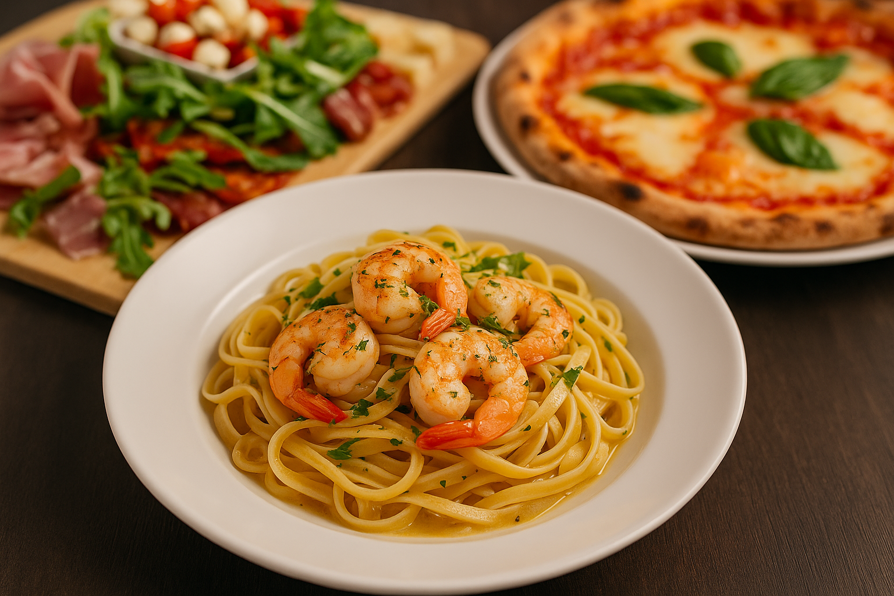

Notre plat de la semaine
L’assiette d’antipasti, un assortiment de charcuteries fines, mozzarella marinée, parmesan et roquette fraîche. Parfait pour commencer votre repas avec authenticité.
Venez goûter nos spécialités !
Des plats savoureux préparés avec passion chaque jour. N’hésitez pas à réserver votre table pour vivre l’expérience Sirena 2.
